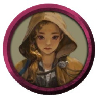
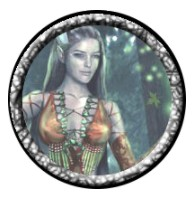

Clique sobre o personagem desejado

Cliubo é um elfo guerreiro oriundo das florestas de.... Seu passado o assombra de maneira tenebrosa. Foi expulso pelo clã de origem após fracassar em uma missão, hoje, procura provar seu valor novamente ajudando em .... foi escolhido a se tornar detentor de um poderoso artefato que se comunica com a mente do guerreiro
A pequena e doce Halfling, Cora Cata-Escovas é uma jovem órfã que perdeu seus pais na invasão do culto do Dragão a Ninho Verde, sua cidade natal. Cora está em busca dos responsáveis pela destruição. Apesar de parecer inofensiva fisicamente, sua inteligência é surpreendente.
A bela elfa druida é um mistério, fala pouco de seu passado, provalvelmente por que se envolveu com alguma coisa pesada, mas não se sabe ao certo. É muito curiosa e está sempre se transformando em animais que auxiliam nos seus objetivos (arrumar isso)
Nascido e criado em Menzoberranzan, por pouco não se tornou uma das fêmeas da deusa Lolth. (Drows que se destacam nos subterâneos são condecorados com uma vagina no lugar do pênis) Fugiu para superfície para se livrar dos planos da divindade. É um mal elemento, fique o mais longe possível desse sujeito.
A mão de gato mais ágil de Neverwinter, Mardred é uma anã ladina que embarcou com o grupo de forasteiros apenas para encontrar seu tio Gundren para roubar mais pedras preciosas na Mina perdida de Phandelver
Reidrigon é o Draconato mais boa praça de Neverwinter, criatura leal aos seus amigos.
Tibalth é um cara misterioso. Ele está morto fisicamente no plano terreno, porém sua alma habita no inferno junto com outras criaturas terríveis. O humano fez um acordo com Asmodeus, uma divindade maligna que sabota os "clientes" de seus pactos. Apesar de estar servindo Asmodeus, Tibalth ainda possui parcial consciência de suas ações e está usando disso para aprender técnicas de Necromancia.